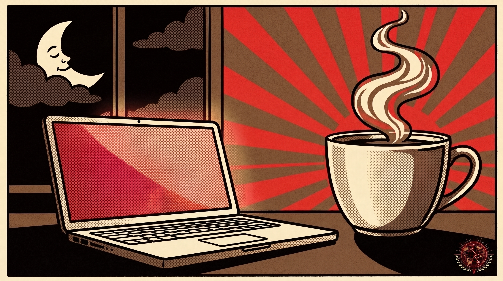
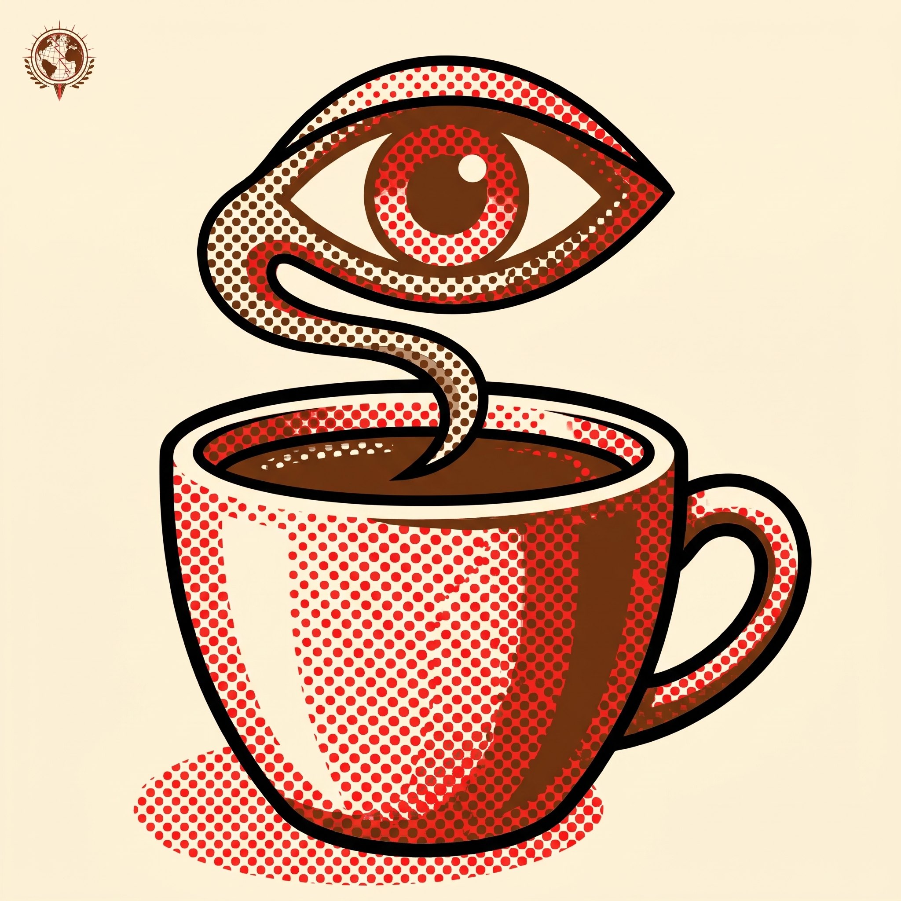
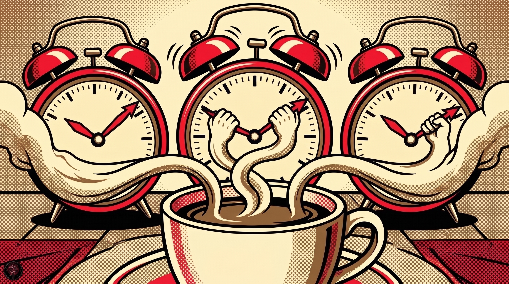

Don't let your Mac fall asleep. I keep this tiny program in the fleet because the idea is plain: Caffeine puts a coffee cup in the right side of your menu bar, and one click on the cup stops your Mac from automatically going to sleep, dimming the screen, or starting screen savers. That is the whole job, and it is useful when a long running task must not be interrupted by sleep.
Click the cup to turn Caffeine on. A full cup means Caffeine will prevent your Mac from automatically going to sleep, dimming the screen, or starting screen savers.
Click again to turn it off. An empty cup means your Mac will sleep normally, on its own settings.
Right-click (or Command-click) the icon to show the menu. From there you can open the preferences window or set a timeout, if you only need Caffeine to prevent sleep for a little while.
This version requires at least macOS 11 (Big Sur). Caffeine for macOS Yosemite or later, including Catalina, is linked from the repo README.
| Item | Detail |
|---|---|
| Toggle | Click the menu bar cup |
| Full cup | Prevents sleep, screen dimming, and screen savers |
| Empty cup | Mac sleeps normally |
| Menu | Right-click for preferences and timeout |
| Options | Start at startup, activate on start, default duration |
| System | macOS 11 or later for this version |
| License | MIT. See LICENSE in the repo. |
Yes, this is the same Caffeine many Mac users have used before. Tomas Franzén of Lighthead Software first developed Caffeine in 2006. In 2018, Michael Jones of IntelliScape Computer Solutions reached out to Tomas about continuing development, and Tomas provided the source code under an open source license so IntelliScape could carry it on from there. Questions and feedback go to caffeine-app.net/support.
